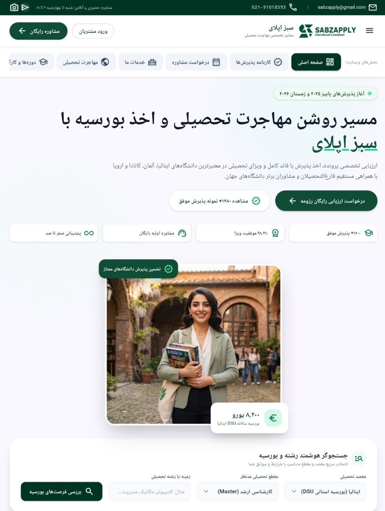
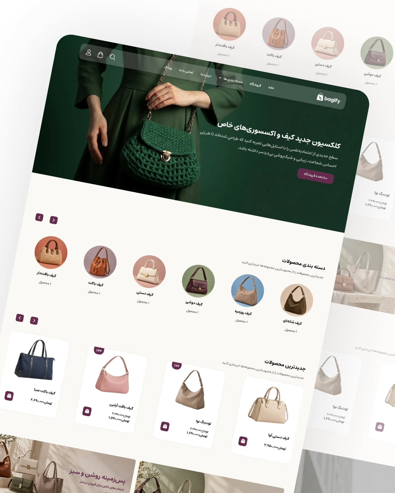
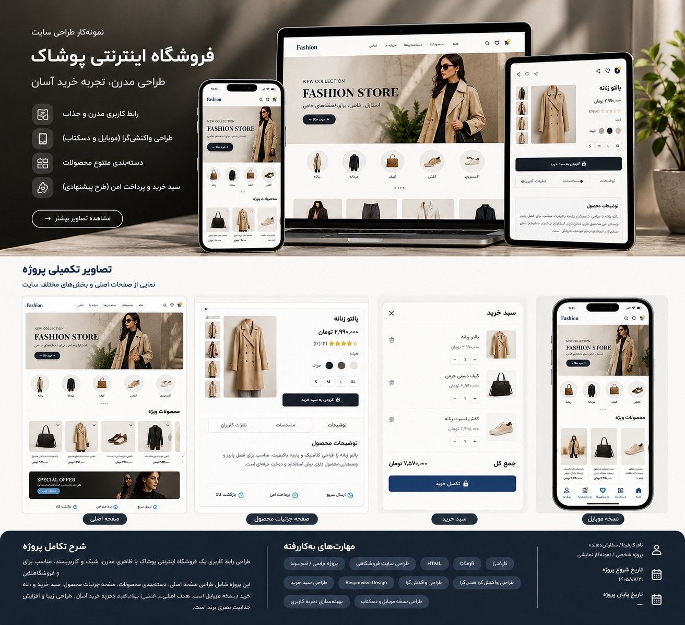
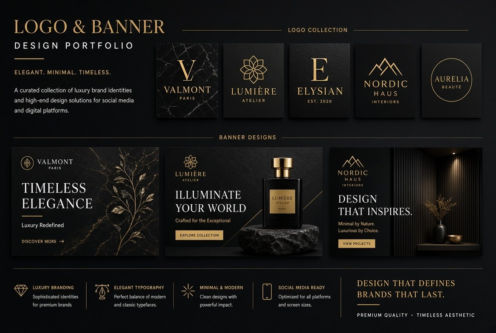
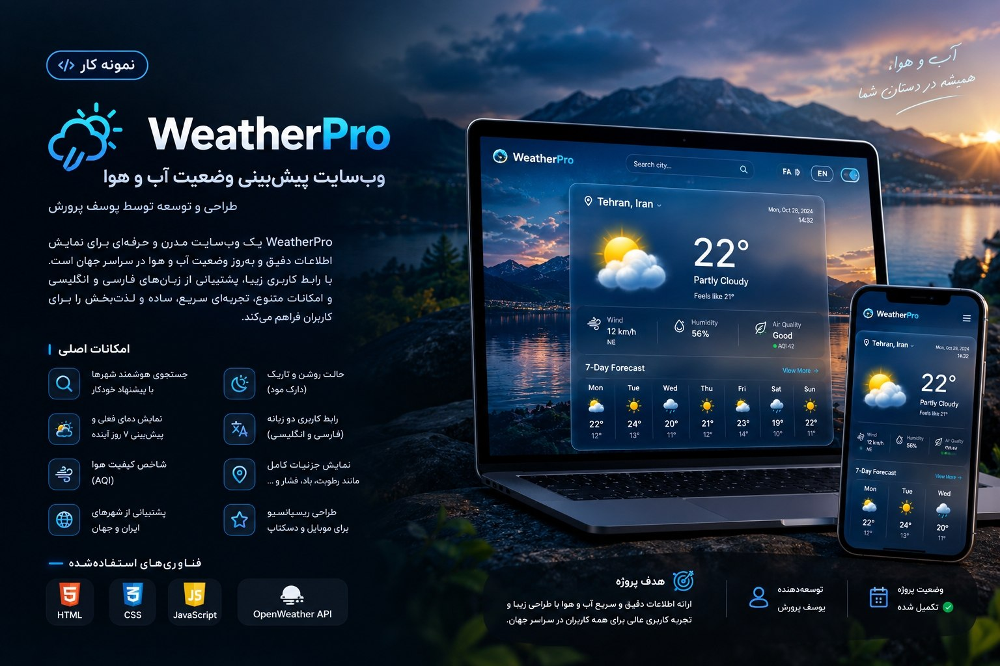
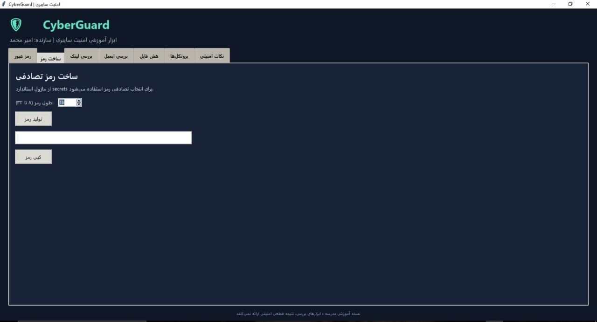
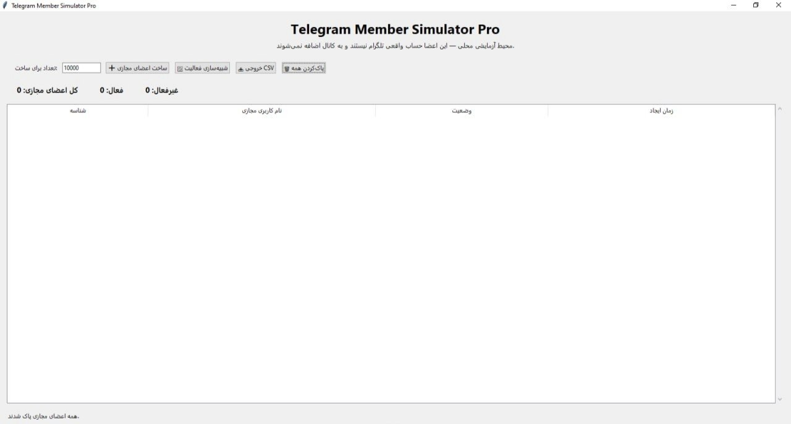
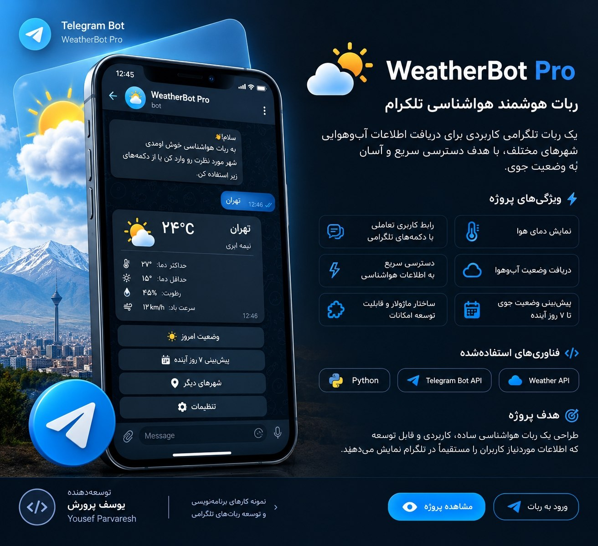

سایت مشاوره تحصیلی سبز اپلای
وبسایت کامل مشاوره تحصیلی با طراحی سبز اختصاصی، کارنامه پذیرشها و فرم رزرو مشاوره.
۱۰ پروژه واقعی در ۵ حوزه؛ سایت، فروشگاه، طراحی، نرمافزار و ربات
۱۰ نمونهکار
وبسایت کامل مشاوره تحصیلی با طراحی سبز اختصاصی، کارنامه پذیرشها و فرم رزرو مشاوره.

فروشگاه کیف و اکسسوری با دستهبندی حرفهای، جستجوی زنده، سبد خرید و پیشنهادهای ویژه.

فروشگاه پوشاک با گالری تصاویر محصول، سبد خرید، صفحه پرداخت و مدیریت موجودی.

کالکشن لوگو و بنر با سبک لوکس و مینیمال؛ ست کامل هویت بصری برای برندهای خاص.

پیشبینی آبوهوای ایران و جهان با AQI، حالت شب و روز و پشتیبانی دوزبانه.

ساخت سریع انواع QR Code؛ لینک، وایفای، تلفن، vCard و متن با دانلود و اشتراکگذاری.
وبسایت آموزش مفاهیم امنیت سایبری با تم تیره و رنگهای آبی نئونی.

نرمافزار آموزشی امنیت با پایتون؛ سنجش رمز، تولید رمز امن و بررسی فیشینگ.

ساخت و مدیریت تا ۱۰٬۰۰۰ عضو مجازی تلگرام با آمار، SQLite و خروجی CSV.

ربات تلگرام هواشناسی با پیشبینی ۷ روز آینده و دکمههای شیشهای تعاملی.
از یک لوگوی ساده تا یک فروشگاه کامل؛ بیایید ایده شما را به یک محصول دیجیتال تبدیل کنیم.